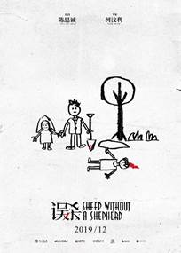

一只羊的救赎——《误杀》
最近大家都在谈全国2019nCov冠状病毒，虽然还没有波及到郑州，但是也不知道是新年到了亦或者害怕流感，街上的人已经明显稀疏。
出于无聊和对朋友圈评价的好奇，我去电影院看了《误杀》。
确实，《误杀》这部电影翻拍的不错（翻拍自印度电影《误杀瞒天记》），在利用蒙太奇手法进行情节叙述的过程中，将两个家庭不可调和的矛盾，社会阶层之间的矛盾体现的淋漓尽致。
观影之后不自觉地想起了之前看过的同样是印度出品的一部电影《调音师》，两者在悬疑上有很多的相似之处，都能够给观众以较深刻的思考和猜疑。
之所以这篇影评叫做《一只羊的救赎》，是因为这部剧的英文名字很有意思——《Sheep Without a Shepherd》，意即没有牧羊人的羊，也就是普通的，没有权力地位的老百姓。
羊在基督教中意思很单纯，和中国的“替罪羊”一词是不是如出一辙，也是以“替罪、救赎、牺牲”为主要内核。在传说中，上帝为了考验亚拉伯罕的忠诚，叫他把他的独生子以撒杀了做成祭品献给上帝，正当亚伯拉罕要动手时有个天使加以阻止说：“现在我知道你是敬畏上帝的了，前面林子里有一只羊，你可用它来‘祭献’上帝。”于是，亚伯拉罕便把小树林中的那只山羊抓来杀了，代替他的儿子献祭。
而电影中出现的多次羊的镜头，虽然很容易被忽略，回想起来却寓意深刻。
第一次出现，李维杰为僧人布施，僧人身后跟着一只羊，僧人微笑着收下的同时更祝他身体健康，旁边的羊也轻声咩咩叫了几声。
这个时候的李维杰家庭美满，即便还有很多问题需要解决，比如居住环境，比如凶恶警官的故意刁难，但是他还是始终坚守着内心的一份纯真和善良。
也就是“无相布施”，不求回报，这种无相而施的功德在宗教中最为宏大。
第二次出现，便是李维杰在根据自己之前所看到的电影情节，销毁证物时出现的大批羊群，他的一举一动并非没有目击者，几只羊的注视，黄色跑车的沉没，气氛极度紧张的同时，昏暗的天色也昭示着李维杰的善良染上了一簇难以抹去的黑色。
第三次，也是直指主题的一次。
倒在血泊中的羊，替李维杰挨了一枪，羊本身是无辜的，它或许只是从旁边经过，但是却遭受了无妄之灾。
其实这就是普通人的世界，有些事情看上去荒诞无稽，但却时有发生。
剧中有这么一句话：“羊只要能好好的吃草，才不会管是谁在褥他们身上的毛呢？”。确实如此，之前的李维杰和小街民众受到警察的傲慢压迫殴打时也只能小声议论，而不敢有所行为，害怕受到报复。
而，只有当基本的生存的权力，基础的人格受到侵犯和侮辱的时候，他们才会站出来，拼尽自己的余力也要搏出一条出路。
羊死了，老百姓爆发了。
第四次，并没有出现羊的图片，却成为了剧情的真正转折点。
李维杰的大女儿的课堂中，老师说：“羊的视力不好，很容易离群，被大型动物吃掉”。
或许羊群并没有看到远处李维杰将跑车推入河中的场景，它们的眼中只有青草。
正如小镇的居民一般，他们其实看不清楚或者说是不了解李维杰是否做了这样一件事情，但是仍然愿意为他呼喊，支持他。羊一旦离群就很容易被大型生物给吃掉，也正是预示着李维杰只有依靠群众的力量才能赢得这场没有硝烟的战争。
他只是一个普通民众，面对警察局长的严刑逼供，如此庞然大物的施压，一个人无疑只能是自取灭亡。
第五次，也是临近结尾的一次，同样也是悬疑和争议较大的一次。
本应在恩叔坟墓中翻出的垃圾小伙的尸体，却变成了那只被无良警官打死的羊。
群众的怒火被瞬间点燃，全民混乱的同时，李维杰在瓢泼大雨中呆立，他离开了羊群，似乎是取得了最终的胜利。
警官被撤职查办，有望竞选市长的垃圾小孩父亲被迫退出，看似大获全胜的完美结局也终究是看似。无法压制的居民暴乱，频发的商铺抢劫偷盗，还有小女儿模仿父亲篡改考试分数似乎都在拉扯着李维杰涌向地狱。
很多人都在喷影片结局的翻拍是一处最大的败笔，我却并不这么认为。
李维杰投案自首或许正是最好的结局，法治本就应完全凌驾于人治之上，规定的法律规章制度不应为任何人以及任何组织的意志所转移。
所以为什么是李维杰犯罪杀人入狱，而不是妈妈和女儿入狱呢？除李维杰主动投案自首且案件并未留下证据之外，或许垃圾小孩本就是李维杰补刀致死。
垃圾小孩被拖进棺材之后根据蒙太奇手法的介绍，他应只是处于一种昏迷吞舌的假死现象，而剧末棺材盖上的，李维杰未指甲划痕以及血迹也隐隐约约透露了这一点。
他或许也是迷茫，无所适从的吧。
生活的平静在一夜之间被完全打破，自己的行为到底是正确亦或是错误，在法律无法伸张正义之时，是否可以寻求他法自我解决？
这些自然都只是一种合理猜测，但是影片发布的海报中，有这么一种实在是耐人寻味并且引人深思。相较于篇头出现的海报，我更喜欢这一张。

很清晰地可以看到，海报中李维杰带着小女儿将垃圾小孩从坟墓中挖出，垃圾的头上以及铁锹留有血迹。
细思极恐。
李维杰是否早已预料到警察局长会对最小的女儿下手，小孩子是不会说谎的，她确实也没有说谎，也正因此，才将警察局长彻底拉入深渊。
李维杰想到警察局长必然会严刑逼供之后，便将计就计带着最小的女儿将棺材挖出，杀死了困在棺材中的李维杰。
并在之后将尸体转移到了由自己策划安装网路的新警察局的地底，关于这一点，结局的“不便透露藏尸地点”也变得合情合理，警察局也确实不会自曝丑闻地下有一具藏尸。
这可能也昭示着：只有将黑暗与丑恶永埋地底，真正的公平与正义才能傲然耸立。
李维杰并没有想逃避过失杀人的责任，但是在各种机缘巧合之下，腐败分子的影响之下，他为了自己的家庭，为了自己的孩子，不得不这样做。
《金刚经》云：“凡所有相，皆是虚妄。若见诸相非相，即见如来。”
在第二次布施时遭到僧人拒绝，而拒绝的原因正是他并非“无相布施”。
一切皆有因果，无论是出于怎样的目的，暗便是暗，侵染了黑色的善良也自然不是真正的善良。